| (1) |
| 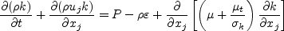 | (2) |
| 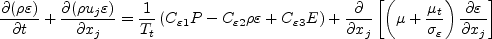 | (3) |
| 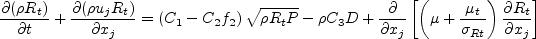 | (4) |
| (5) |
| (6) |
| (7) |
| (8) |
| 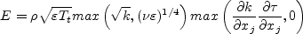 | (9) |
| 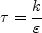 | (10) |
| 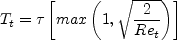 | (11) |
| 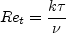 | (12) |
| 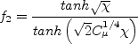 | (13) |
| 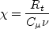 | (14) |
| 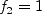 | (15) |
| 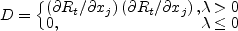 | (16) |
| 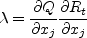 | (17) |
| 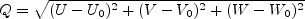 | (18) |
| 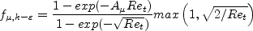 | (19) |
| 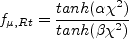 | (20) |
| 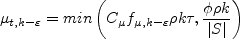 | (21) |
| (22) |
| 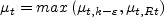 | (23) |
| 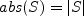 | (24) |
| (25) |
| 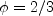 | (26) |
| 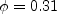 | (27) |
| (28) |
| 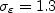 | (29) |
| 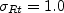 | (30) |
| 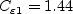 | (31) |
| (32) |
| (33) |
| 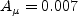 | (34) |
| (35) |
| 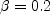 | (36) |
| 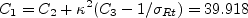 | (37) |
| 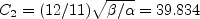 | (38) |
| 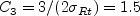 | (39) |
| (40) |
| 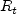 | (41) |
| 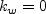 | (42) |
| 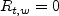 | (43) |
| 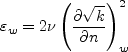 | (44) |
| 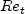 | (45) |